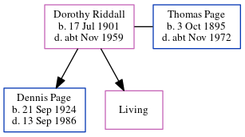

Dorothy I Page (née Riddall) 1901 - c1959
[ Home ] | [ Calendar ] | [ Surnames Index ] | [ Census Index ] | [ Family History ]Dorothy Riddall, the wife of Thomas Victor Page (the third cousin once-removed on the father's side of Nigel Horne), was born on Jul 17, 19011 and married Thomas (a bricklayer with whom she had 2 children: Dennis Gordon and Joan I, along with 1 surviving child) in Elham, Kent, England around Aug 19223. On Sep 29, 1939, she was living at 37 Sidney Street, Folkestone, Kent1.
She died c. Nov 1959 in Portsmouth, Hampshire, England2.
Children
- Dennis Gordon was born on Sep 21, 1924
Citations
- 1939 Register - Findmypast (was the wife of the head of the household)
- England & Wales deaths 1837-2007 - Findmypast
- England & Wales Marriages 1837-2005 - Findmypast
Media
England & Wales marriages 1837-2005 - BMD/M/1922/3/AZ/001100/035
1939 Register - TNA/R39/1721/1721C/004/19
England & Wales deaths 1837-2007 - BMD/D/1959/4/AZ/000796/019
Family Tree
Generated by ged2site. Last updated on Jun 11, 2024